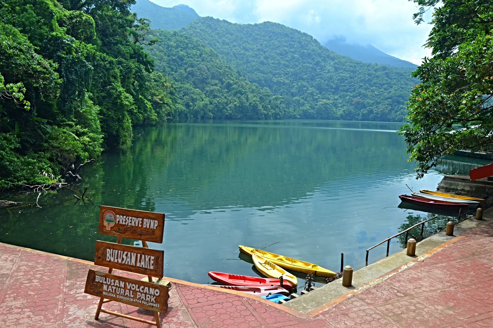

Bulusan Lake
Bulusan
Sitting at the foot of towering Mount Bulusan, it is surrounded by a lush tropical rainforest thickly endowed with flora and fauna. Its deep green emerald waters add a mystical sense of tranquility hardly equaled by any body of water we had previously seen.
Kayaking is a popular sport among tourists who visit Bulusan Lake. Waterfalls and springs can be found in the lush rainforest surrounding Bulusan Lake. Hiking and crossing the hanging bridge are commonly done in this vicinity.
Back to Page